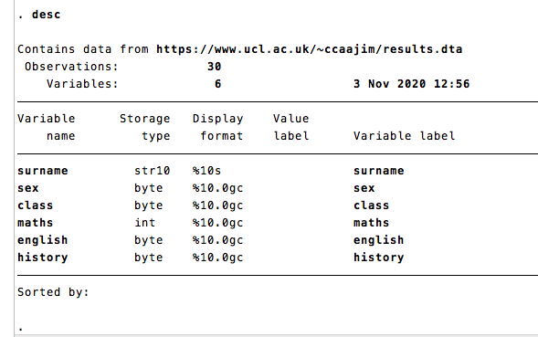

4 Basic Operations
4.1 Folders
I assume that you have a folder structure like
Project Folder
├── raw data
├── scripts
│ ├── cleanmydata.do
│ └── modelmydata.do
├── documentation
│ ├── PDFs
│ └── Word_docs
└──graphsOf course, other folder set-ups are possible, so be aware of your own as you follow the rest of this guide. I assume that the path to your project is
c:\users\jt\Documents\Projects\StataWrangling
4.2 The do file
Let’s start off by creating a new do file:
doedit newdo.doClear everything to make sure there’s nothing leftover in our environment
clear all4.3 Initiating your data wrangling script
In a new data wrangling script you should - start a log; - make sure you are in the correct project directory; - clear working memory.
So in your new do file add these lines:
capture log close
log using "MainProjectName $S_DATE.log", appendor
cmdlog using "CommandsProjectName $S_DATE.log", appendto log commands only and not output.
Next you should make sure you are in the correct directory. Normally for a data wrangling script, this will be the raw data directory for the project.
cd c:\users\jt\Documents\Projects\StataWrangling\raw data\and then the line
clear allto start with a clear workspace.
4.4 Dataset
We’re using a dataset of examination results from thirty school students.
These data are in in csv format: comma seperated values. Each case or observation is a row with variables in rows seperated by commas.
Read the main data file:
use https://www.ucl.ac.uk/~ccaajim/resultsWhen you first read a datafile, you should always
describethe data;- check the codebook.
You can do this for the complete set of variable s for simple cases, but you may wish to be selective when you have a lot of variables.
4.4.1 Data Types
The examination data is quite simple. In your do file add
describe
codebookThis produces
 ### Interpretation
This output shows first how many observations there are in your data and how many variables. The table that follows includes some detail about each variable:
Storage type There are two basic data types in Stata: numeric and string data. String data has two subtypes: strL (L for long) variables can store phenominal amounts of character data (2 billion) and str# (where # is a number) and have a limit on length of 2045 characters. Numeric data is of one of five types:
| type | precision | range |
|---|---|---|
| byte | integer | -127 to 100 |
| int | integer | -32,767 and 32,740 |
| long | integer | -2,147,483,647 and 2,147,483,620 |
| float | real | 8 digits of accuracy |
| double | real | 16 digits of accuracy |
Format types are associated with variables - each has a default, which determines how values are displayed, so that regardless of the precision of the type, the number of decimal places and the width in number of characters to be displayed can be fixed.